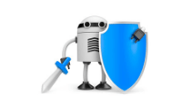

Obetibos del OVI

El objetivo de esta sitio web es bridar información a los usuarios sobre la precaución que deben tener al momento de navegar por la web, ya que en esta hay muchas personas con malas intenciones se aprovechan del poco conocimiento que tienes algunos, sobre los peligros que hay en la red, y aquí tratamos de brindarles ese conocimientos para que no caiga en manos de esos cibercriminales.
Tips y Consejos

Al momento de navegar por internet tenga en cuenta los siguientes consejos.
Evitar los encales sospechosos.
No acceder a sitios web de dudosa reputación.
Actualizar el sistema y aplicaciones.
Descargar aplicaciones de sitios web oficiales.
Utilizar tecnología de seguridad.
Evitar el ingreso de información personal en formularios sospechosos.
Aceptar contactos conocidos.
Evitar programas sospechosos.
Utilizar contraseñas fuertes.